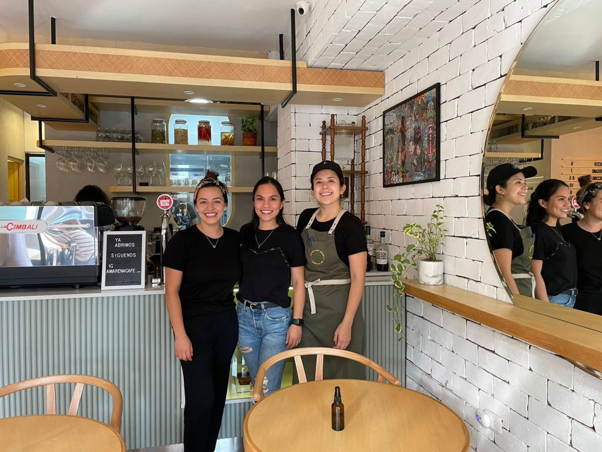

Desde una idea hasta el primer sorbo
Coffeejeji nacio el 2021 con una idea de un emprendimiento ante la crisis economica.
Un café con propósito
Nuestro proposito es brindar un comodo momento para que las personas se unan mientras disfrutan algo esquisito.
Hoy seguimos creciendo
A lo largo de los años, Coffeejeji se ha convertido en un punto de encuentro para estudiantes, familias y amantes del buen café. Hoy en día, seguimos creciendo, innovando nuevas recetas.
